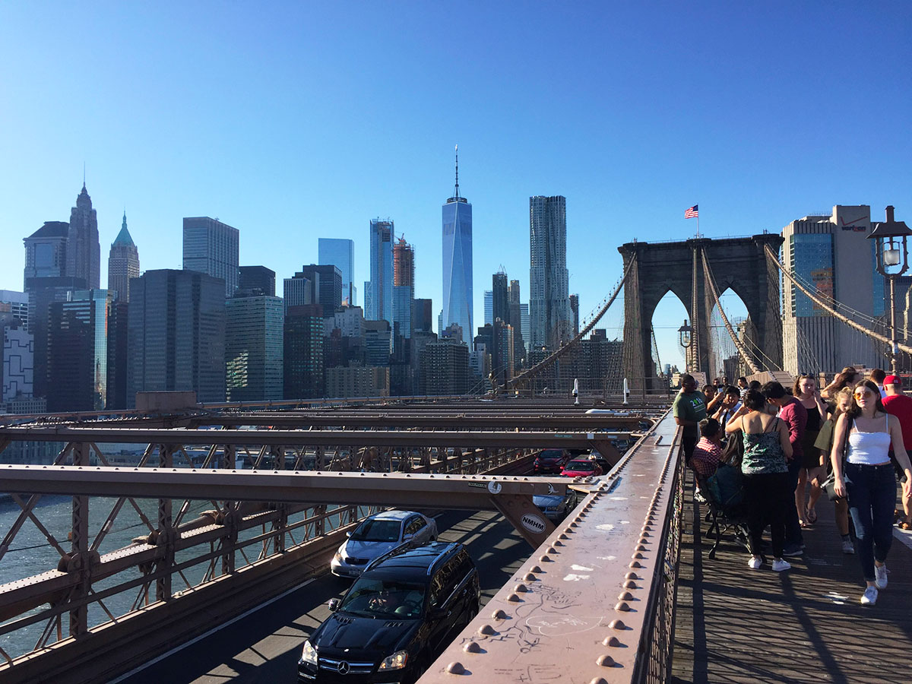
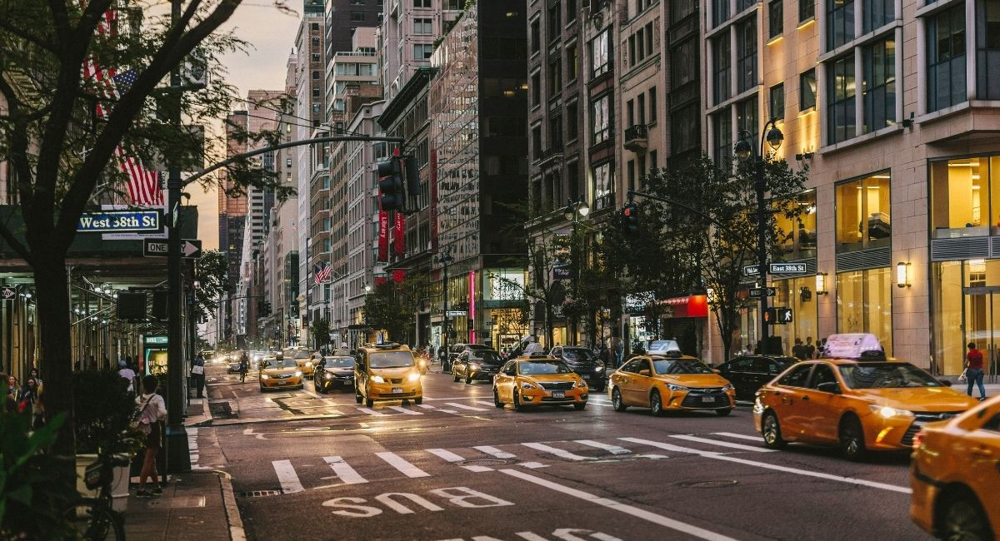
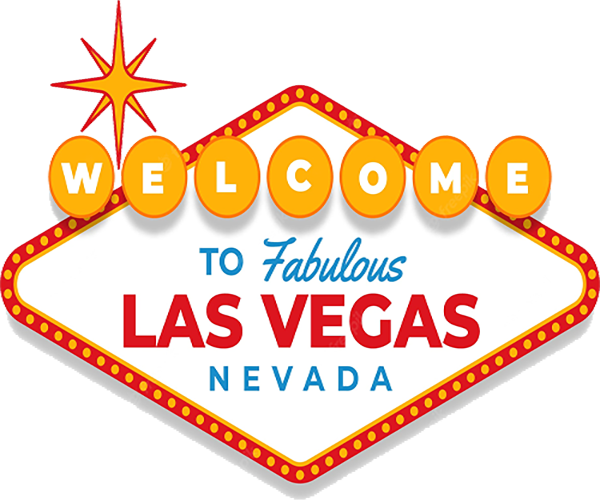

On observe plus d’une soixantaine d’espèces de mammifères dans le parc national de Yellowstone,
comme le loup gris, le grizzli, le lynx, le bison, l’ours noir,
le puma, le cerf de Virginie ou l’élan.
Plus de trois cents espèces d’oiseaux peuplent également
le parc : le plongeon huard, le faucon pèlerin, le pélican blanc d’Amérique, l’arlequin plongeur…
Démesurée et captivante, passionnante et exubérante, toujours à la pointe des tendances !
Au cours de ces dernières années, New York est devenue la capitale économique et culturelle la plus importante au monde.
La ville offre une ambiance et un style de vie uniques en leur genre, qui sont difficilement descriptibles par écrit et qu'il est préférable de vivre si l'occasion s'en présente.
Les Incontournables
Assister à une comédie musicale à Broadway, passer une nuit dans Times Square,
parcourir d'un bout à l'autre le Pont de Brooklyn, profiter d'un après-midi de shopping
sur la Cinquième Avenue ou se mettre dans la peau d'un courtier à Wall Street,
sont quelques-unes des activités que vous ne pourrez vivre qu'à New York.




Jadis appelé « la région où l’enfer déborde »
Le parc national de Yellowstone se situe dans l’Etat américain du Wyoming. Il déborde légèrement sur l’Idaho et le Montana.
le Yellowstone est connu pour ses phénomènes géothermiques : il abrite deux tiers des geysers de la planète.
Le parc national de Yellowstone abrite plus de 1500 espèces végétales endémiques.
Les conifères sont particulièrement répandus (le pin tordu, le sapin de Douglas, le pin à écorce blanche…). Le tremble et le saule sont les feuillus les plus nombreux.
Une plante à fleur très rare, la Yellowstone Sand Verbena, pousse aux abords du lac Yellowstone.


La ville qui ne dort jamais
Le nom de Las Vegas, qui signifie « Les Prairies » ou « Les Vallées Fertiles », lui a été donné par les espagnols en raison de l’eau présente dans les sous-sols.
L’arrivée de la civilisation est récente au cœur du Désert de Mojave !
Ce n’est que dans les années 1930 que Las Vegas se développa réellement avec l’aménagement du barrage Hoover, à une cinquantaine de kilomètres de la ville, mais surtout grâce à la légalisation des jeux d’argent en 1931.
Les hôtels-casinos sortent de terre, le « Strip » ou boulevard qui constitue l’épine dorsale de la cité, se dessine jusqu’à l’explosion de la notoriété dans les années 1960-70.
Spectacles:
Il y a une panoplie de spectacles de danse, de magie, de concerts ou de cabarets.Casino:
Avec ses 25 hôtel-casinos, elle s’étend sur plus de 7 km. La plupart d’entre eux sont basés sur le thème des plus bels endroits de la planète,
comme Venice, Égypte ou même New-York. Au centre du Strip, il y a par exemple le Bellagio qui est connu pour son lac de 5 ha avec le célèbre spectacle de fontaine.Shopping:
les shopping addicts ont l’occasion de s’adonner à leur passe-temps favori :
le Strip et les grands hôtels regorgent de « malls » où les cartes de crédit ont une autre occasion de flamber.